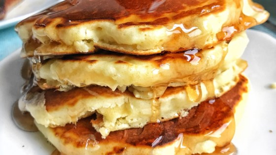

Good Old Fashioned Pancakes
"Recipe by: dakota kelly"
"This is a great recipe that I found in my Grandma's recipe book. Judging from the weathered look of this
recipe card, this was a family favorite."
Ingredients
- 1 1/2 cups all-purpose flour
- 1 teaspoon salt
- 1 tablespoon white sugar
- 3 1/2 teaspoons baking powder
- 1 1/4 cups milk
- 1 egg
- 3 tablespoons butter, melted
Directions
- prep: 5m
- Cook: 15m
- Ready In: 20m
- In a large bowl, sift together the flour, baking powder, salt and sugar. Make a well in the center and pour
in the milk, egg and melted butter; mix until smooth.
- Heat a lightly oiled griddle or frying pan over medium high heat. Pour or scoop the batter onto the griddle,
using approximately 1/4 cup for each pancake. Brown on both sides and serve hot.
Footnotes
Tip
Aluminum foil can be used to keep food moist, cook it evenly, and make clean-up easier.
Nutrition Facts
Per Serving: 158 calories; 5.9 g fat; 21.7 g carbohydrates; 4.5 g protein; 38 mg cholesterol; 504 mg sodium.